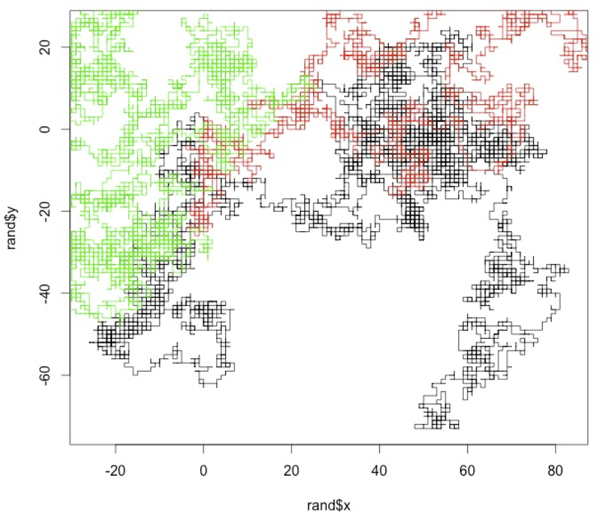
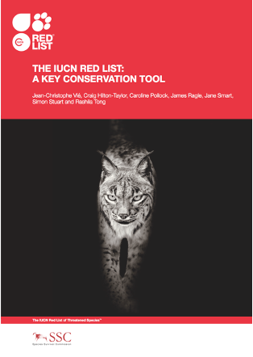
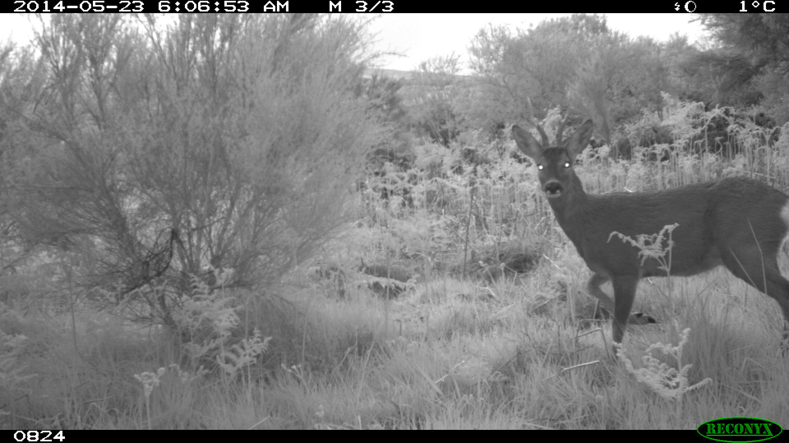
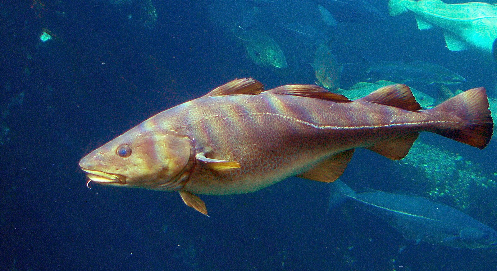
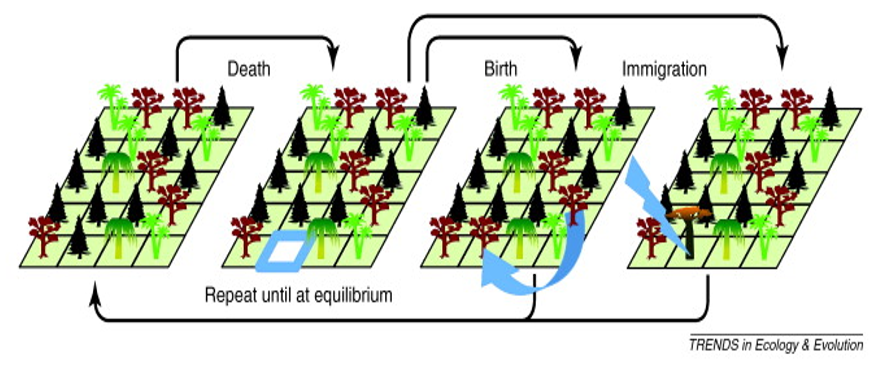

# example filtering data from anoles only from San Jose sites
df_sanjose <- subset(df, Site == "San Jose")Appendix B — Computational labs
B.1 Climate space of an ectotherm
Solar radiation and convection are the two main pathways for animals such as small lizards. In this case, the total heat flux (f) into the animal is given by the heat flux equation:
\[f = q\ –h*(b - a)\]
\(q\) = solar radiation (cal/h)
\(h*(b - a)\) = heat loss through convection
\(b\) = body temperature of the animal (ºC)
\(a\) = air temperature (ºC)
\(h\) = convection heat transfer coefficient (cal/h/ ºC)
- Equilibrium body temperature
- Assuming that air temperature is 18ºC, and h = 50 cal/h, plot the lizard’s equilibrium body temperature as a function of solar radiation. Assume that solar radiation varies between 0 and 1500 cal/h
- Climate space of a Lizard
Draw the climate space of the lizard by drawing the polygon that is limited by the minimum and maximum temperatures that the lizard can support, as a function of solar radiation. Consider that the upper lethal limit for the body temperature (bmax) is 36ºC and the lower lethal limit for the body temperature (bmin) is 24ºC.
Hint:
polygon- draws the polygons whose vertices are given in x and y.
- Air Temperature and solar radiation throughout the day in two locations
Plot the following values of air temperature and solar radiation that are available throughout a day in two locations. For:
Times of the day
t = c("00:00","03:00","06:00","09:00","12:00", "15:00","18:00","21:00","00:00")Solar radiation in the rock habitat
rock_q = c(150,150,800,1100,1300,1200,800,400,150)Air temperature in the rock habitat
rock_a = c(18,13,10,14,21,24,22,20,18)Solar radiation in the bush habitat
bush_q = c(150,150,450,600,650,650,350,200,150)Air temperature in the bush habitat
bush_a = c(18,13,10,14,21,24,22,20,18)
At which time of the day is the lizard on the rock, and at which time is it at the bush? Is there any time when the lizard cannot be at any of the locations?
- Body temperature of A. cristatellus in two different habitats
Section 1.4.2 presents a data frame containing data on individuals A. cristatellus living in urban and forested areas in three cities in Puerto Rico, giving us the perfect opportunity to assess the potential thermal effects of habitat upon this species. To do this:
- Make a linear model for individuals of A. cristatellus living only in natural habitats (
context=natural) and another for individuals living in urban habitats (context=urban).
Hint: to filter the data you can use the subset function in R
Is there a habitat where lizards are consistently warmer? If so, provide an ecological explanation (quantitatively) for this observation (assume an ambient temperature of 30 °C).
Is your model appropriate for explaining your data?
B.2 Optimal foraging theory
Predator with a strategy for maximizing energy.
Let ai be the point abundance per unit of time of prey type i, ei be the caloric content of prey type i, hi be the time it takes to consume prey type i, ew is the energy expended per unit of time by the predator while searching for prey, and eh is the energy expended per unit of time by the predator to ingest prey. Consider that there are only two types of prey and that:Strategy 1: Chosing prey of type 1
Strategy 2: Chosing prey of type 2
Strategy 3: Chosing both preysShow that if e1> e2 and h1 <h2 then the second strategy is never a optimal strategy
Plot and comment the graph of the energy gain per unit of time for the strategy of consuming both preys and for the strategy of consuming only the best prey. Make the abundances vary between 0.005 and 0.5 ind/s for the best prey. Consider the abundance of the worse prey to be 0.05 ind/s and 0.01 ind/s. Consider an active predator with the following physiological parameters:
e1 = 10J; e2 = 100J; h1 = 1s; h2 = 60s; ew = 1 J/s; eh = 1 J/S
Predator with a strategy of sit-and-wait.
Ew is the energy expended per unit of time by the predator while waiting for its prey, ep is the energy expended per unit of time by the predator while chasing the prey, v is the velocity of the predator in chase and a is the point abundance of preys per unit of time.- Produce a graph of energy gain per unit of time in function of the size of the feeding territory. Consider the following values for the parameters of the predator and prey: ew = 0,1 J/s; ep = 1 J/S; v = 0,5 m/s; a = 0,005 ind/s/m2; and e = 10;
B.3 Evolutionary games
- The Prisoners Dilemma Competition. In this class we will have a competition of algorithms for playing the prisoner’s dilemma.
- Write a function that takes as parameters two vectors that account with the history of the previous plays and returns one play (i.e., Cooperate – “C” or defect – “D”). This play should try to be the best response to the history of past moves. One example of such a function is:
strat<-function(own,opponent)
{
n <- length(opponent)
if(n==0) "D"
else
if(own[n]=="D") opponent[n]
else "C"
}Use the function pd_sim (see below) to play your strategy with the strategy of the other groups (ask for each group their function(s)) and with itself, in an iterative game with x moves. Compare the results of the cumulative rewards as well as the sequence of moves. Report to the rest of groups the values of the rewards for each of the tournaments. What was the best strategy? What strategies are best responses to themselves?
pd_sim<-function(p1_strat,p2_strat,n) { w1<-0 #accumulated pay-off (fitness) of player 1 w2<-0 #accumulated pay-offs of player 2 h1<-NULL #history of plays of player 1 h2<-NULL #history of plays of player 2 for (t in 1:n) { a1<-p1_strat(h1,h2) a2<-p2_strat(h2,h1) p1<-mat[a1,a2] p2<-mat[a2,a1] w1<-w1+p1 w2<-w2+p2 h1[t]<-a1 h2[t]<-a2 } list(w1=w1,w2=w2,h1=h1,h2=h2) }
B.4 Dispersal and the random-walk
- Random walk for 1 individual
- Create your own code to simulate an individual random walk. Assume that the starting point is always x,y =(0,0) and the probability of an individual to choose any direction (i.e. left, right, up or down) is the same. It should be a function taking as argument the number of steps and returning a list of two vectors, one with the x positions over time and another with the y positions overtime.
- Plot together the random walks (at least 5000 steps) of a few individuals. 
- Random walk for several (n) individuals
- Create your own code to simulate random walks by several (n)individuals and returns the last position of each individual. It should be a function that takes as arguments the number of individuals and the numbers of time steps, and returns a list of two vectors, the last x position of each individual, and the last y position of each individual.
- Create a histogram showing the distribution of the x and y last positions of 10 000 individuals after 10 time steps, 100 time steps and 1 000 time steps.
- Create a function that receives as parameters a vector of values xlast, a mean value (meanx) and a standard deviation (stdx) and returns the log-likelihood of observing those values for those parameters.
- Find the value meanx and stdx that maximize the likelihood of the observations. Are they the same as mean(xlast) and std(xlast)? Why?
- Extra credit: Create a histogram showing the distribution of the distance to the origin (sqrt(x^+y^2)) of the last positions of 10 000 individuals for 10 time steps, 100 time steps, 1000 time steps and 10000 time steps. What is the relationship between the length of the randomwalk and the mean distance? Fit the Rayleigh distribution (2 r / sigma^2) * exp(-r^2/2 sigma^2) using non-linear fitting to each of the histograms and overlay it on the graph.
B.5 Pandemic growth
The exponential dynamics of the pandemic. In early 2020, the first wave of the global pandemic of COVID-19 hit several European countries. Here we will plot the data for those countries and fit an exponential growth model.
- Load the cumulative infected individuals time series from the COVID-19 pandemic in five countries. Each time series starts after the first fifteen infections are detected.1
it <- c(17, 79, 132, 229, 322, 400, 650, 888, 1128, 1689, 2036, 2502, 3089, 3858, 4636, 5883, 7375, 9172, 10149, 12462, 15113, 17660, 21157, 23980, 27980, 31506, 35713, 41035, 47021, 53578) #Feb22-March22 es <- c(17, 35, 54, 82, 136, 192, 267, 348, 531, 764, 1094, 1527, 2299, 3274, 4427, 5958, 7641, 9785, 11491, 13994, 17688, 21735, 26304, 31750, 36616, 41262, 48953, 57506, 66460, 75641) #Feb27-March27 fr <- c(17, 38, 57, 100, 130, 178, 212, 285, 423, 613, 716, 1126, 1412, 1784, 2281, 2876, 3661, 4499, 5423, 6633, 7730, 9134, 10995, 12612, 14459, 16018, 19856, 22302, 25233, 29155) #Feb27-March27 uk <- c(18, 22, 30, 42, 47, 69, 109, 164, 220, 271, 352, 412, 469, 617, 876, 1282, 1766, 2244, 2605, 3047, 3658, 4427, 5426, 6481, 7736, 8934, 10312, 12650, 15025, 17717) #Feb27-March27 de <- c(17, 21, 47, 57, 111, 129, 157, 196, 262, 400, 684, 847, 902, 1139, 1296, 1567, 2369, 3062, 3795, 4838, 6012, 7156, 8198, 14138, 18187, 21463, 24774, 29212, 31554, 36508) #Feb26-March26- Plot the data in a linear plot, coloring each country with a different colour. What do you observe?
- Plot the data in a semi-log plot (using the plot option
log=”y”), coloring each country with a different color. What do you observe? - Carry out a linear regression with the data of each country (using the log of the n values) and estimate the growth rate R. Are the values the same for all countries? Do they vary over time?
- Knowing that \[R_0 = R^\tau\] and that the infectious period (\(\tau\)) duration is 10 days, what are the \(R_0\)’s in different countries?
- Write a for loop to simulate geometric (exponential) growth, going from time t in 1:100, and storing the population size values at each time step t+1 in variable n based on the population values at time t, i.e.
n[t+1]<-R*n[t]. Don’t forget to initialize the population size before the for loop withn<-1. Plot a couple of runs of the for loop with different R values (for instanceR=1.01andR=1.1) in linear scale. - Given that you know the solution of the geometric growth equation to be \(n(t)=n_0 R^t\), create a vector of values with this formula using the same R as you used above, but starting with
n0<-2and overlay them on the plot.
B.6 Population Viability Analysis

Consider a population with exponential growth but that exhibits environmental stochasticity, with the logarithm of the population growth rate following a normal distribution with mean \(\bar{r}=\log(\bar{R})\) and variance \(v\). Assume that the population has an on-off density dependence and cannot grow above the carrying capacity \(K\). According to Foley (1994)2 the expect time to extinction is \[T=\frac{1}{s r}[e^{s \log(k)}(1-e^{-s \log(N_0)} )-s \log(N_0)]\] where \(s=2r/v\).
Plot the mean extinction times, \(T\), as a function of \(r\), \(v\), \(n_0\), and \(K\). Please comment each plot. \(r\) can carry from 0.01 to 0.2, \(v\) can vary from 0.05 to 1.0, \(n0\) can vary from 0 to 10, and \(K\) can vary from 10 to 500. Use as base parameters
n0=10,K=100,v=0.3andr=0.01.Write a function that simulates a population with these dynamics numerically. Start by using the for loop that you developed in Lab 2 and modify it to include a carrying capacity and growth rate that is taken every year from a normal distribution. The function should take parameter
n0,r,v, andK. It should return the vector of the population sizes over time.Simulate the dynamics with the following parameters:
n0=3;r=0.01;v=0.2;K=500n0=100;r=0.01;v=0.2;K=500;
Extended credit: Compare the model predictions with the results from the analytical approximation of Foley. You need to do many simulations to reach the predicted extinction times from Foley. For instance, you can create a function that call the function developed in (b) and executes it 100 times, returning the median time to extinction across the simulations.
B.7 The camera trapper
A researcher place camera traps at a grid of sites during 19 days to observe roe-deer.
Load the data on the file roe_deer_2016_r.csv into R. Briefly describe the structure of the dataset.
Case 1: Ignoring detection probability.
- Build a vector that for each site takes value 1 when roe-deer is present and 0 when is absent.
- Using maximum-likelihood estimate the occupancy probability (\(\psi\)). First create a function that takes as parameters psi and a vector of presence/absences and returns the likelihood. Then plot that function for a range of \(\Psi\) values and find the \(\psi\) value that maximizes the function.
- Assume that based on previous work we know that occupancy is somewhat between 0.2 and 0.5. Using a Bayesian approach, calculate the posterior probability distribution for the occupancy \(P(\psi)\).
Help: A function returning the \(P(\psi|data)\) . It takes as parameters a vector
yof presences/absences, a value forpsi, and a function for the prior distribution of \(\psi\) namedpriorpsi:occupancybayesian <- function(y,psi,priorpsi) { integrand <- function(x) occupancylikelihood(y,x)*priorpsi(x) occupancylikelihood(y,psi)*priorpsi(psi)/ integrate(integrand, lower = 0.01, upper = 0.99)$value }A function returning \(P(\psi)\), the prior distribution of \(\psi\) values. It takes as parameters a value for
psi.prior <- function(psi) { dunif(psi,0.2,0.5) }Case 2: Using a hierarchical model with detection probability
- Using maximum-likelihood estimate the occupancy probability (\(\Psi\)) and detection probability (\(p\)).

B.8 Managing a fishery
- Consider that you are managing a fishery with the following dynamics: \[dn/dt = 0.2 n (1-n/10000) \]
- Plot the production function of the fishery, indicating the stock size for the maximum sustainable yield and the corresponding production level.
- Suppose you establish an annual quota (harvest) that is equivalent to 50% of the maximum sustainable yield. What are the two stock size levels that sustainably allow that exploitation level?
- Explore what happen when you manage this fishery for 100 years. Start by writing a function that simulates the logistic growth above with a constant harvest. The function should take as parameters the initial population size n0 (the stock of the fishery), the annual harvest h, and the number of years for which you simulate the population dynamics and return a vector with the population sizes over time. Discuss the results of the following experiments.
- Experiment 1: Set the harvest equal to the production at MSY and initial population size at carrying capacity.
- Experiment 2. Set the harvest equal to the production at MSY and initial population size at the stock size of MSY
- Experiment 3. Set the harvest equal to 50% of the maximum sustainable yield and initial population size at carrying capacity.
- Experiment 4. Set the harvest equal to the production at MSY and initial population size at the stock size of MSY - 1000 individuals.
- Experiment 5. Set the harvest equal to the production at MSY and initial population size at the stock size of MSY - 1000 individuals.
- Explain why in a system with constant quotas, MSY is not stable and should not be the management goal.
- Extra credit: Modify the logistic growth function to have stochastic dynamics so that there is a variance of 10% in the annual productivity. Simulate again experiment 2 a few times. What happens?
- Discuss how these results relate with the paper of Worm et al (2009) about the need to rebuild fisheries.

B.9 Road Kill
Populations in space and the impacts of roads
The Red fox …So, while they may be most active at night. Red foxes are especially active during the daytime in spring and summer (April-Sept) as they are foraging for food to feed their young. Source photo: Wikipedia, CC0. |
Goals of the exercise:
Identify road segments with hotspots of red fox-car-collisions.
What impact do activity patterns have on the rate of animal-car-collision hotspots?
Use the False Discovery Rate (FDR) method to identify such hotspots.
- Please install the following R packages
library(readxl)
library(dplyr)
library(sf)
library(ggplot2)
library(fuzzySim)
library(grid)- Load the roadkill dataset.
- Explain the structure of the dataset.
- Show that differences in seasonal activity patterns impact the FDR hotspot results in red fox-car-collisions.
- How many hotspots were detected for the active season?
- Plot, based on the FDR method, true and “false” hotspots. Explain the general geographic locations of the hotspots and those vary between the two different seasons.
- Think about conservation management implications.
B.10 Simulating a neutral community
The neutral theory in ecology provides a mechanistic explanation for species abundance distributions. It seeks to understand the impact of speciation, extinction, dispersal and ecological drift on the species abundance distribution (SAD), assuming that all species have equal opportunities (Hubbell, 2001).
It is important to note that the neutral theory is a model created to explain a pattern of relative abundance within communities, but it does not necessarily reflect reality (communities’ mechanisms). The neutral theory utilizes a model based on the dynamics of a species’ population, which is governed by generalized birth and death events, including speciation, immigration, and emigration (Rosindell et al (2011).

The neutral theory paradox is that in absence of migration or mutation diversity gradually declines to zero or monodominance. Let’s see what happens to species richness and the species abundance distribution over time for different parameters of the model. Start by installing the package untb.
Without mutation or dispersal (pure ecological drift): We start with a local community with 20 species, each with 25 individuals. The simulation then runs for 2500 generations where 10 individuals die per generation. Mutation rate is zero and immigration rate is zero
Plot the number of species over time.
Plot the species abundance distribution at time 1, 100 and 2500
Plot the map of individuals at those time steps.
With point mutation: Same parameters as (1) but with speciation rate of 0.1.
Plot the number of species over time.
Plot the species abundance distribution at time 1, 100 and 2500
Plot the map of individuals at those time steps.
[Extra Credit] With immigration: Same parameters as (1) but immigration rate greater than zero. Play with different abundance distributions for the metacommunity.
B.11 Monitoring biodiversity
- Exploring the BBS dataset
- Load the file Florida.csv into R. Briefly describe the structure of the dataset.
- Map the monitored transects/routes in Florida’s map. Use the maps library to plot the counties of florida as a base map.
- For transect 4 and transect 109 in year 2018 plot calculate the species richness, Shannon diversity index H and evenness J of both transects, with H being \[H=-\sum_i (p_i \ln p_i)\] where \(p_i\) is defined as the proportion of individuals found in species \(i\). Compare the two transects.
- Plot the species abundance distribution and abundance-rank for both transects. What do you observe?
- Choose one transect and plot the species richness, Shannon diversity, and geometric mean abundance over time
- Extra credit 1: Produce a map of the trends of one these metrics across Florida (for instance coloring different points according to the trend)
- Extra credit 2: Estimate the number of species in Florida by combining the different transects and using one of the estimators. Use bootstrap and/or jacknife to calculate confidence intervals.
Data source: https://github.com/owid/covid-19-data/tree/master/public/data, accessed 8 Nov 2020↩︎
Foley, P. (1994) Predicting Extinction Times from Environmental Stochasticity and Carrying-Capacity. Conservation Biology 8: 124–137.↩︎